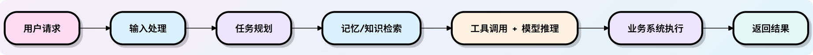
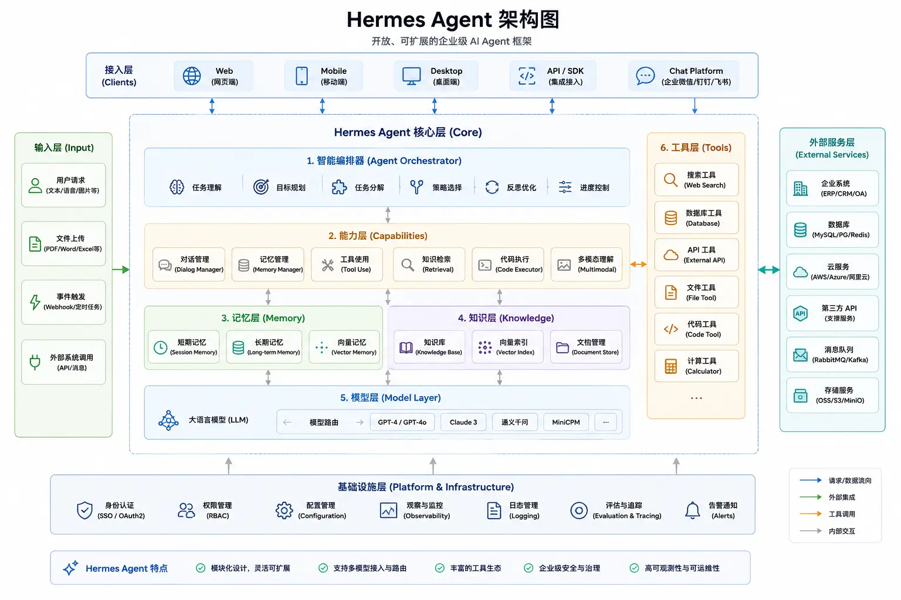

Hermes Agent 简介
Hermes Agent 是 Nous Research 开源的一款自进化 AI Agent，它能够持续学习、自我改进，并跨平台持久化运行。
Hermes Agent 与传统的聊天机器人不同，Hermes Agent 不仅仅回答问题——它会记住你的偏好、自动提炼工作流、跨会话保持上下文，并在多个消息平台上同步运行。
- GitHub 仓库：https://github.com/nousresearch/hermes-agent
- Hermes Agent 官网：https://hermes-agent.nousresearch.com/

什么是 Hermes Agent？
Hermes Agent 是一个由 Nous Research 构建的自进化 AI Agent 框架，采用 MIT 开源协议。
Hermes Agent 的核心定位不是聊天机器人，而是自主 Agent——一个能够在后台持续运行、主动学习、跨平台工作的智能代理。
官方定义非常直接：
The agent that grows with you. 一个会随着使用不断成长的 Agent。它是一个自主智能体，运行时间越长，能力就越强。
当前大多数 AI 工具的困境：失忆问题
用过 AI 工具的人都有这样的经历——花一个下午教会 Claude 或 ChatGPT 你项目的特殊规范，一次极其高效的协作后关闭了对话窗口。
第二天打开新会话，一切又回到了原点。
这叫做AI 工具的失忆问题（The Amnesia Problem）——能力在，记忆不在。
Hermes 的解法：闭合学习循环
Hermes 通过三个核心机制解决失忆问题，形成一个不断自我增强的闭合循环：
任务执行
↓
提炼可复用技能（Skill）
↓
更新持久记忆（Memory）
↓
下次执行类似任务时自动加载
↓
持续改进 ……
- 1. 持久记忆（Persistent Memory）：三层记忆架构——工作记忆（当前会话）、语义长期记忆（
memory.md）、情节日志（SQLite + 全文检索）。Agent 会主动整理和更新自己的记忆文件，而不是靠你每次手动提供上下文。 - 2. 自动技能创建（Autonomous Skill Creation）：当 Agent 完成一个复杂任务（通常涉及 5 步以上的工具调用），它会自动将这个工作流提炼成一个可复用的Skill 文件（Markdown 格式）。下次遇到类似任务，直接加载这个 Skill，无需重复摸索。
- 3. 模型无关设计（Model-Agnostic）：Hermes 不绑定任何特定模型。可以接入 Nous Portal、OpenRouter（200+ 模型）、OpenAI、Anthropic，或本地部署的 Ollama 模型，一行命令切换，无需修改任何代码。
简单来说：聊天机器人是问一句答一句，Hermes Agent 是给一个目标，它自己想办法完成。
与其他 AI 工具的对比
下表将 Hermes Agent 与当前主流的 AI 工具进行对比，帮助你理解它们在核心能力上的差异。
| 对比维度 | ChatGPT / Claude.ai | Claude Code / Cursor | Hermes Agent |
|---|---|---|---|
| 跨会话记忆 | 有限/无 | 无 | ✅ 三层持久记忆 |
| 自动学习技能 | ✗ | ✗ | ✅ 自动提炼 Skill |
| 运行方式 | 云端 SaaS | IDE 插件 | 本地长期运行进程 |
| 多平台接入 | 网页/APP | IDE 内 | Telegram/Slack 等 15+ 平台 |
| 数据隐私 | 上传云端 | 上传云端 | ✅ 100% 本地 |
| 定时自动化 | ✗ | ✗ | ✅ 内置 Cron 调度 |
| 模型绑定 | OpenAI/Anthropic | OpenAI/Anthropic | ✅ 任意模型 |
| 开源 | ✗ | 部分 | ✅ MIT License |
与其他开源 Agent 框架的区别
除了上面这些面向终端用户的工具，开源社区中还有不少 Agent 框架，Hermes 与它们也有本质区别。
Hermes 与 AutoGPT / CrewAI 的区别
AutoGPT、CrewAI 等框架擅长编排多步骤任务，但它们本质上是无状态的——每次运行都从零开始，没有记忆积累，也没有从过去经验中提炼工作流的机制。
Hermes 的差异在于时间维度：它不只是执行当前这个任务，而是在执行过程中同步构建一个越来越强大的自我。
Hermes 与 OpenClaw 的区别
OpenClaw 是目前与 Hermes 最接近的竞品，两者都支持持久记忆和跨平台接入。
核心差异在于：
- OpenClaw 以控制平面优先为设计理念，强调生态系统广度，技能由人工编写和维护。
- Hermes 以自进化循环为核心，技能由 Agent 自主创建和改进，强调学习深度。
简单说：OpenClaw 是你精心调教的助手，Hermes 是会自我成长的学徒。
框架对比一览
| 特性 | Hermes Agent | AutoGPT | CrewAI | OpenClaw |
|---|---|---|---|---|
| 记忆系统 | 三层架构（工作+语义+情节） | 向量数据库 | 无内置记忆 | 无内置记忆 |
| 技能提炼 | 自动提炼 + /learn 命令 | 无 | 无 | 无 |
| 多平台接入 | Telegram/Discord/Slack/WhatsApp/Signal | 无 | 无 | Telegram/Discord |
| 部署模式 | 6 种（CLI/Docker/Serverless 等） | Docker | Python 脚本 | Docker |
| MCP 支持 | 原生支持 | 有限 | 有限 | 有限 |
| 定时任务 | 内置 Cron + 托管 Chronos | 无 | 无 | 无内置 |
| 插件系统 | Middleware + Observer Hooks | 有限 | 有限 | 有限 |
| 开源协议 | MIT | MIT | MIT | MIT |
Hermes 的三层架构指的是：Agent 核心（决策与推理）→ Gateway（消息路由与平台适配）→ Connector（平台加密与身份边界）。这种分层设计让每一层可以独立扩展和替换。
Hermes 的核心理念
Hermes Agent 的设计围绕一个核心闭环：记忆 → 技能 → 任务执行 → 自我改进。
这个闭环让 Agent 在使用过程中不断成长，越用越懂你。

记忆（Memory）
Hermes 采用三层记忆架构，从短到长覆盖不同时间维度。
工作记忆负责当前会话的上下文，语义长期记忆（memory.md）存储关键事实和偏好，情节日志（SQLite + FTS5）则记录所有的历史对话和操作。
Agent 可以跨会话搜索和召回之前的记忆，这意味着它不会忘记你之前告诉过它的事情。
技能（Skills）
技能是 Hermes 最核心的特色——它是程序性记忆的抽象，以 Markdown 文件的形式驱动可复用的工作流。
当 Agent 执行了 5 步以上的工具调用后，它可以自动将这个流程提炼为一个 Skill。
你也可以通过/learn命令从文档、API 文档或历史对话中生成 Skill。
社区通过 Skill Hub（agentskills.io）分享和安装技能，打造了一个开放的技能生态。
任务执行
Hermes 拥有 70+ 内置工具，覆盖文件系统、Web 浏览、代码执行、图像识别、音频处理等 28 个工具集。
通过 MCP（Model Context Protocol）协议，你可以接入任何第三方工具服务器，无限扩展 Agent 的能力边界。
自我改进
每 15 个任务后，Hermes 会触发 Periodic Nudge 机制，自动评估并优化自己的记忆和技能。
Honcho 用户建模系统会构建辩证式用户画像，让 Agent 跨会话构建对你的深度理解。
核心特性
核心特性:- 连接（Connect）:Telegram、Discord、Slack、WhatsApp、Signal、Email、CLI——一个 Agent，统一内存，所有平台。在 Telegram 发起的对话，可以在终端无缝继续。
- 记忆（Remember）:Hermes 会学习你的项目、自动生成技能，并且永远不会忘记它解决过的问题。每次会话结束后，重要信息都会写入持久记忆。
- 定时（Schedule）:用自然语言设定定时任务——日报、备份、例行审查、晨间简报——在后台无人值守运行。
- 委派（Delegate）:生成拥有独立对话上下文、独立终端和 Python RPC 脚本的隔离子 Agent，实现零上下文成本的并行流水线。
- 搜索与多模态（Search）:网页搜索、浏览器自动化、视觉理解、图像生成、文字转语音、多模型推理，全部内置。
Hermes Agent 支持自由切换任意大模型，包括Nous Portal、OpenRouter（200+ 模型）、OpenAI、GLM、Kimi、MiniMax等，执行hermes model即可切换，无需改代码、无厂商锁定。
| 提供商 | 说明 | 设置方式 |
|---|---|---|
| Nous Portal | 订阅制，零配置 | 通过hermes model进行 OAuth 登录 |
| OpenAI Codex | ChatGPT OAuth，使用 Codex 模型 | 通过hermes model进行设备代码认证 |
| Anthropic | 直接使用 Claude 模型 | 通过 Claude Code 认证或 Anthropic API 密钥 |
| OpenRouter | 多提供商路由 | 输入您的 API 密钥 |
| DeepSeek | 直接 DeepSeek API 访问 | 设置DEEPSEEK_API_KEY |
| Hugging Face | 通过统一路由器访问 20+ 开放模型 | 设置HF_TOKEN |
| 自定义端点 | VLLM、SGLang、Ollama 或任何 OpenAI 兼容 API | 设置基础 URL 和 API 密钥 |
| 特性 | 能力说明 |
|---|---|
| 原生终端交互 | 完整 TUI 界面，支持多行编辑、命令补全、历史回溯、流式输出等 |
| 全平台接入 | 一个网关接入 CLI、Telegram、Discord、Slack、WhatsApp 等多端 |
| 闭环学习体系 | 自主管理记忆、技能生成与优化、跨会话召回、用户建模 |
| 定时自动化 | 内置 Cron 调度，支持日报、备份、审计等 7×24 自动任务 |
| 并行任务处理 | 支持子 Agent 并行执行、多工作流拆分与 RPC 工具调用 |
| 多环境运行 | 支持本地、Docker、SSH、Daytona、Modal 等 6 种后端 |
| 科研级能力 | 支持轨迹生成、强化学习环境、训练数据压缩 |
整体架构
整体流程：

架构图：

| 模块 | 作用 | 示例 |
|---|---|---|
| 接入层（Clients） | 接收用户请求 | Web、App、API、飞书 |
| 输入层（Input） | 处理各种输入数据 | 文本、图片、PDF、Excel |
| 调度器（Agent Orchestrator） | 理解任务并拆分执行流程 | 分析需求 → 制定计划 |
| 能力层（Capabilities） | 提供执行能力 | 对话、检索、代码执行 |
| 记忆层（Memory） | 保存上下文和历史信息 | 会话记忆、长期记忆 |
| 知识层（Knowledge） | 提供知识检索能力 | RAG、向量数据库 |
| 模型层（Model Layer） | 提供推理能力 | GPT、Claude、本地模型 |
| 工具层（Tools） | 调用外部工具完成任务 | 搜索、数据库、API |
| 外部服务层（External Services） | 对接业务系统 | ERP、CRM、云服务 |
| 基础设施层（Infrastructure） | 支撑系统运行 | 权限、日志、监控 |
适用场景速览
Hermes Agent 的应用场景非常广泛，以下是几个典型的使用方向。
| 场景 | 描述 | 典型配置 |
|---|---|---|
| 个人效率助手 | 管理日程、处理邮件、整理信息、自动化日常任务 | 默认 Profile + 日程/邮件 Skill |
| 编程助手 | 代码审查、Bug 修复、项目脚手架生成、文档编写 | 编码 Profile + 代码相关 Skill |
| 研究 Agent | 文献检索、数据收集、信息整理、报告生成 | 研究 Profile + 搜索/分析 Skill |
| 自动化运维 | 服务器监控、日志分析、自动告警、定时巡检 | 运维 Profile + Cron 定时任务 |
| RL 训练数据生成 | 批量轨迹生成、ShareGPT 格式导出、与 Atropos 集成 | batch_runner + 训练 Profile |
| 多平台客服 | Telegram/Discord/Slack 统一接入，自动回复常见问题 | Gateway 多平台 + FAQ Skill |
其他扩展一个 Hermes Agent 实例可以通过 Profile 系统创建多个分身，每个分身独立配置记忆、技能和工具，互不干扰。比如一个做编码助手，一个做研究助手，一个做运维监控。
点我分享笔记
<p style="font-size:14px;">笔记需要是本篇文章的内容扩展！</p><br> <p style="font-size:12px;"><a href="../tougao.html" target="_blank">文章投稿，可点击这里</a></p> <p style="font-size:14px;"><a href="../w3cnote/runoob-user-test-intro.html" target="_blank">注册邀请码获取方式</a></p> <h3 class="text-muted"><i class="fa fa-info-circle" aria-hidden="true"></i> 分享笔记前必须<a href=";.html" class="runoob-pop">登录</a>！</h3> <p><a href="../w3cnote/runoob-user-test-intro.html" target="_blank">注册邀请码获取方式</a></p>